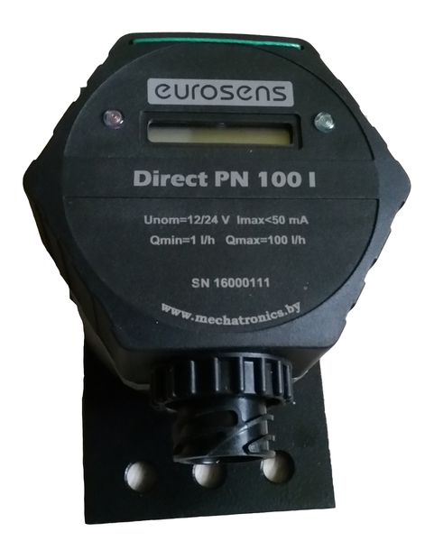

Датчики расхода топлива Eurosens Direct

Краткое описание товара
Датчики расхода жидкого топлива серии Eurosens direct предназначены для измерения фактического расхода дизельного топлива (а также моторного масла, печного и биотоплива).
Подробное описание товара
Датчик серии Eurosens direct применяется для измерения фактического расхода топлива на двигателях и горелках, а также объемного расхода и объема протекающих через него нефтепродуктов на стационарных и подвижных объектах, технологических линиях различных областей промышленности, сельского хозяйства и транспорта. Наиболее часто ДРТ Eurosens direct монтируются на двигателях машин и генераторов мощностью до 600 кВт и котельных мощностью до 3 МВт.
Преимущества
Есть исполнение с дисплеем
Устойчивость к внешнему магнитному воздействию
Автомобильный герметичный разъем на корпусе
Высокая коррозионная стойкость
Встроенная температурная компенсация
Гарантия 3 года без ограничения «пробега»
Характеристики товара
Для всех датчиков топлива EUROSENS DELTA:
максимальное давление: 25 бар
номинальное давление: 0,2 бар
макс/мин температура: 80/-40 0С
относительная влажность окружающей среды при T=200C: не более 95%
напряжение питания: DC 10-50 В
ток потребления при U=12В: не более 50 мА
ток потребления при U=24В: не более 25 мА
абсолютная тонкость фильтрации измеряемой жидкости: не более 0,08 мм
монтажная присоединительная резьба: M14х1,5
Цифровые датчики могут быть настроены с помощью сервисного комплекта (продается отдельно)
на конкретные условия эксплуатации, чтобы учесть индивидуальное технического состояние техники,
в том числе наличия и величины гидроударов, наличия воздуха в обратке, фактической величины
холостого хода и т.п., чтобы производить именно те вычисления, которые необходимы пользователю.
Датчики расхода топлива Eurosens delta соответствуют ГОСТ 30378, ГОСТ 3940, ГОСТ 28751, ГОСТ 29157, ГОСТ Р 50607
Все права защищены ©2019 Geekbrains